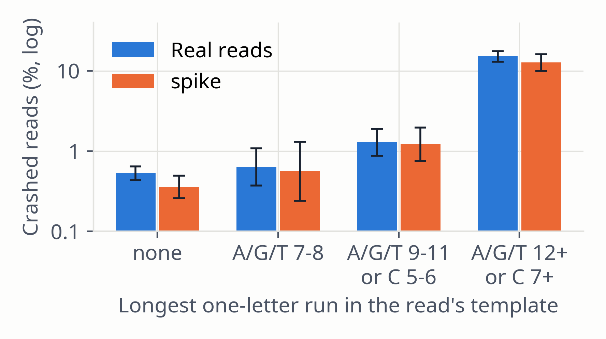

Each base's quality is drawn from the qualities that sampled reads show in the same context:
Learned once per run from 20 blocks of 50 kb of the input, per mate. A context is used once it holds 20 observations, else the draw backs off in five steps to the whole mate. Example run: 142,458 pairs, 36,986 full contexts.

Figure 5. Reads with a crashed 3′ end (≥ 10 of the last 20 qualities below Q15) by the longest one-letter run in the reference under the read, in the 25 windows of the SNV run: real reads (n = 23,838) and spike's reads (n = 13,009). Bars: Wilson 95% CIs.
spike · Methods · 10 / 25